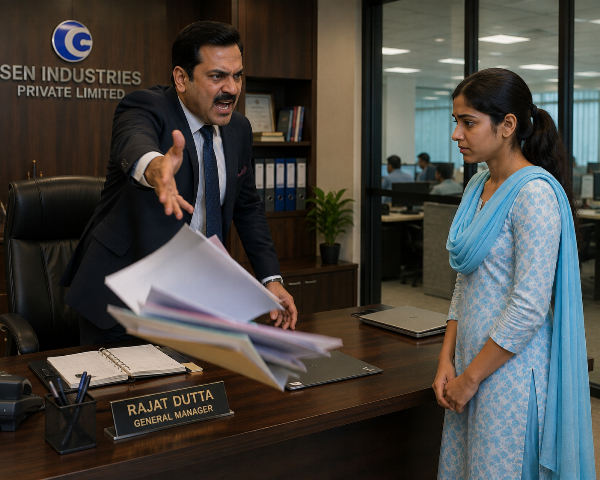
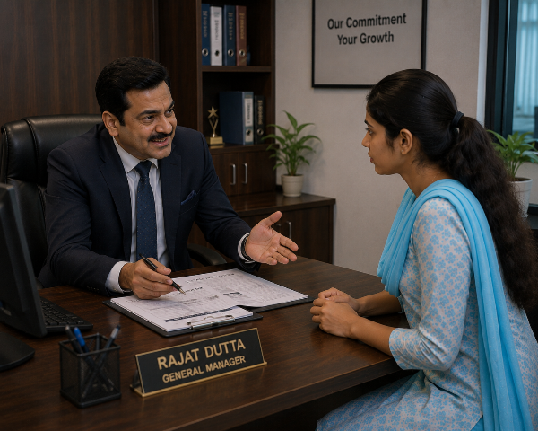
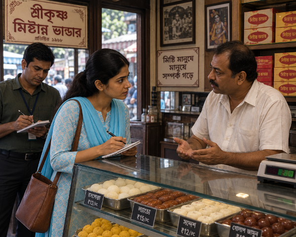

পর্ব ১১
বৃদ্ধ কৃষকের অসহায় মুখ, পাশে দাঁড়িয়ে মেঘলা
রহস্যের প্রথম সূত্র
পরদিন সকালে অফিসে এসেই মেঘলা আগের দিনের ঘটনাটা নিয়ে ভাবছিল।
এক টুকরো সন্দেশের দাম পাঁচ হাজার টাকা!
বিষয়টা তার মাথা থেকে কিছুতেই বের হচ্ছিল না।
ঠিক তখনই অনন্যা তার ডেস্কে এসে দাঁড়াল।
— "কী হয়েছে? এত চিন্তায় আছ কেন?"
মেঘলা চারদিকে তাকিয়ে নিচু গলায় বলল,
— "ওই মিষ্টির দোকানটা আসলে কী?"
অনন্যার মুখের হাসি মিলিয়ে গেল।
সে ধীরে বলল,
— "আমি কিছু জানি না... আর জানলেও বলব না। কারণ চাকরিটা আমার খুব দরকার।"
এই বলে সে নিজের ডেস্কে ফিরে গেল।
দুপুরের দিকে একজন বৃদ্ধ কৃষক অফিসে এলেন।
তার পরনে মলিন ধুতি-পাঞ্জাবি। হাতে একটি পুরোনো ফাইল।
লোকটি কাঁপা গলায় বললেন,
— "বাবা, আমার ফাইলটা তিন মাস ধরে আটকে আছে। একটু সাহায্য করুন।"
মেঘলা ফাইলটা দেখে বলল,
— "আপনি একটু বসুন। আমি দেখে আসছি।"
সে ম্যানেজারের কেবিনে গিয়ে ফাইলের কথা বলল।
রজত দত্ত ফাইল খুলে একবার দেখেই বললেন,
— "নিয়ম অনুযায়ী সময় লাগবে।"
মেঘলা বাইরে এসে বৃদ্ধকে কথাটা জানাল।
বৃদ্ধ হতাশ হয়ে বেঞ্চে বসে পড়লেন।
ঠিক তখনই পি.এ. সঞ্জয় ধীরে ধীরে তার পাশে গিয়ে বসল।
খুব আস্তে বলল,
— "দাদু, যদি কাজটা খুব জরুরি হয়, তাহলে একটা উপায় আছে।"
বৃদ্ধ আগ্রহ নিয়ে তাকালেন।
— "কী উপায়?"
— "সামনের 'মধুময় মিষ্টান্ন ভাণ্ডার' থেকে 'গোলাপ-খাস' সন্দেশ কিনে আনুন। স্যার ওই মিষ্টিটা খুব পছন্দ করেন।"
বৃদ্ধ সরলভাবে জিজ্ঞেস করলেন,
— "কত দাম?"
সঞ্জয় উত্তর দিল,
— "মাত্র পাঁচ হাজার টাকা।"
কথাটা শুনে বৃদ্ধের মুখ শুকিয়ে গেল।
তিনি অসহায় গলায় বললেন,
— "বাবা, পাঁচ হাজার টাকা হলে তো আমার এক মাসের সংসার চলে যায়।"
সঞ্জয় কাঁধ ঝাঁকিয়ে চলে গেল।
সবকিছু নিজের চোখে দেখছিল মেঘলা।
তার ভেতরটা কেঁপে উঠল।
সে নিজের ব্যাগ থেকে এক হাজার টাকা বের করে বৃদ্ধের হাতে দিতে গিয়েও থেমে গেল।
কারণ সে জানত, পাঁচ হাজার টাকার সন্দেশ কিনেও নিশ্চয়তার কোনো প্রমাণ থাকবে না।
বৃদ্ধ ধীরে ধীরে অফিস থেকে বেরিয়ে গেলেন।
যাওয়ার সময় শুধু বললেন,
— "গরিব মানুষের ন্যায়বিচারও কি আজ বিক্রি হয়ে গেছে?"
কথাগুলো মেঘলার হৃদয়ে গভীর দাগ কেটে গেল।
বিকেলে বিনয় সেন হঠাৎ অফিসে এলেন।
তিনি মেঘলাকে জিজ্ঞেস করলেন,
— "কাজে কোনো অসুবিধা হচ্ছে?"
মেঘলা এক মুহূর্তের জন্য সব বলে দিতে চাইল।
কিন্তু চারদিকে রজত দত্তের লোকজনকে দেখে সে চুপ করে গেল।
শুধু বলল,
— "না স্যার, সব ঠিক আছে।"
বিনয় সেন চলে যাওয়ার পর রজত দত্ত দূর থেকে মেঘলার দিকে তাকিয়ে রইল।
তার মনে সন্দেহ জাগল।
"মেয়েটা বেশি খেয়াল করছে... সাবধানে থাকতে হবে।"
অন্যদিকে, মেঘলা মনে মনে সিদ্ধান্ত নিল—
"প্রমাণ ছাড়া কাউকে অভিযুক্ত করব না। কিন্তু সত্যিটা একদিন অবশ্যই সামনে আনব।"
সে জানত না...
রজত দত্তও সেই মুহূর্তে তার বিরুদ্ধে প্রথম ষড়যন্ত্রের পরিকল্পনা শুরু করে দিয়েছে।
চলবে...
পর্ব ১২

ম্যানেজারের কেবিনে বদলে দেওয়া রিপোর্ট নিয়ে দাঁড়িয়ে মেঘলা
প্রথম ষড়যন্ত্র
পরদিন সকাল।
মেঘলা অফিসে পৌঁছেই দেখল তার ডেস্কের সামনে কয়েকজন কর্মচারী দাঁড়িয়ে।
সবাই ফিসফিস করে কথা বলছে।
সে এগিয়ে যেতেই একজন বলল,
— "এই যে, এসে গেছে!"
আরেকজন ঠোঁট বাঁকিয়ে বলল,
— "মালিকের প্রিয় কর্মীকে তো কিছু বলা যাবে না!"
মেঘলা কিছুই বুঝতে পারল না।
ঠিক তখনই পি.এ. সঞ্জয় এসে বলল,
— "মেঘলা ম্যাডাম, ম্যানেজার স্যার এখনই আপনাকে ডাকছেন।"
রজত দত্তের কেবিনে ঢুকতেই তিনি গম্ভীর মুখে একটি ফাইল টেবিলের ওপর ছুড়ে দিলেন।
— "এটা তুমি তৈরি করেছ?"
মেঘলা ফাইল খুলে দেখল।
রিপোর্টের গুরুত্বপূর্ণ কয়েকটি সংখ্যা বদলে দেওয়া হয়েছে।
এমন ভুল সে কখনও করতে পারে না।
সে শান্তভাবে বলল,
— "না স্যার। আমি এই রিপোর্ট এমনভাবে তৈরি করিনি।"
রজত দত্ত রেগে উঠলেন।
— "তাহলে কী? রাতের অন্ধকারে ভূত এসে বদলে দিয়েছে?"
মেঘলা দৃঢ় গলায় বলল,
— "আমার কম্পিউটারে যে ফাইলটা আছে, সেটা দেখলে সত্যিটা বোঝা যাবে।"
ম্যানেজার কয়েক সেকেন্ড চুপ করে রইলেন।
তারপর বললেন,
— "যাও, দেখে এসো।"
মেঘলা নিজের কম্পিউটার খুলল।
সেখানে সংরক্ষিত ফাইলটি একেবারে ঠিক ছিল।
সে প্রিন্ট নিয়ে ম্যানেজারের ঘরে ফিরে এল।
দুটি রিপোর্ট পাশাপাশি রাখতেই স্পষ্ট বোঝা গেল— অফিসে জমা পড়া কপিটি বদলে দেওয়া হয়েছে।
রজত দত্ত মুখে অবাক হওয়ার ভান করে বললেন,
— "আচ্ছা... তাহলে হয়তো কেউ দুষ্টুমি করেছে। যাও, নতুন করে জমা দাও।"
মেঘলা বেরিয়ে এল।
কিন্তু তার মনে প্রশ্ন জাগল—
"আমার রিপোর্ট বদলাল কে?"
দুপুরে ক্যান্টিনে বসে অনন্যা আস্তে করে বলল,
— "আজ তোমার সঙ্গে যা হয়েছে, সেটা ইচ্ছে করেই করা হয়েছে।"
— "তুমি কীভাবে জানলে?"
— "কারণ আমার সঙ্গেও একসময় একই ঘটনা ঘটেছিল। প্রথমে ভুল প্রমাণ করার চেষ্টা, তারপর অপমান, তারপর..."
সে বাকিটা আর বলল না।
মেঘলা জিজ্ঞেস করল,
— "তুমি প্রতিবাদ করোনি?"
অনন্যা মৃদু হেসে বলল,
— "করেছিলাম। তারপর আমার ইনক্রিমেন্ট দুই বছর বন্ধ ছিল।"
সেদিন সন্ধ্যায় অফিস ছুটির পরে মেঘলা নিজের ডেস্কে কিছু কাগজ গুছাচ্ছিল।
হঠাৎ সে লক্ষ্য করল— দূরে দাঁড়িয়ে পি.এ. সঞ্জয় তার কম্পিউটারের দিকে তাকিয়ে আছে।
মেঘলা এগিয়ে যেতেই সঞ্জয় দ্রুত সরে গেল।
তার মনে সন্দেহ আরও গভীর হলো।
সে সিদ্ধান্ত নিল, এখন থেকে প্রতিটি গুরুত্বপূর্ণ ফাইল নিজের পেনড্রাইভে এবং ব্যক্তিগত ই-মেইলেও সংরক্ষণ করবে।
কেউ যদি আবার ফাইল বদলানোর চেষ্টা করে... তাহলে এবার তার কাছে সত্যের প্রমাণ থাকবে।
কিন্তু মেঘলা বুঝতে পারেনি— রজত দত্ত শুধু তার কাজ নষ্ট করতে চান না।
তিনি ধীরে ধীরে এমন এক ফাঁদ তৈরি করছেন, যেখান থেকে বেরিয়ে আসা খুব কঠিন হবে।
চলবে...
পর্ব ১৩

রজত দত্তের কেবিনে খাম প্রত্যাখ্যান করছে মেঘলা
ফাঁদের শুরু
এক মাস কেটে গেছে।
মেঘলার কাজে সবাই মুগ্ধ।
যে ফাইল অন্যরা দুই দিনে শেষ করত, সে এক দিনেই নির্ভুলভাবে শেষ করে ফেলত।
বিনয় সেন প্রায়ই বলতেন,
— "এই মেয়েটার মধ্যে দায়িত্ববোধ আছে।"
এই প্রশংসাই রজত দত্তের কাছে সবচেয়ে বড় সমস্যা হয়ে দাঁড়াল।
সে বুঝতে পারল, শুধু ফাইল বদলে মেঘলাকে হারানো যাবে না।
আরও বড় ফাঁদ পাততে হবে।
সেদিন দুপুরে পি.এ. সঞ্জয় মেঘলার ডেস্কে এসে দাঁড়াল।
— "ম্যাডাম, স্যার আপনাকে ডাকছেন।"
মেঘলা কেবিনে ঢুকতেই রজত দত্ত হাসিমুখে বললেন,
— "বসুন।"
এই প্রথম তিনি তাকে বসতে বললেন।
মেঘলার একটু অস্বস্তি লাগল।
রজত দত্ত টেবিলের ড্রয়ার খুলে একটি খাম বের করলেন।
— "তোমার কাজ দেখে আমি খুব খুশি। এটা তোমার জন্য ছোট্ট একটা উপহার।"
মেঘলা খামটি না নিয়েই বলল,
— "ধন্যবাদ স্যার। কিন্তু কোম্পানির নিয়ম অনুযায়ী ব্যক্তিগত উপহার নেওয়া ঠিক হবে না।"
রজত দত্ত হেসে বললেন,
— "এটা কোনো ঘুষ নয়। শুধু ভালো কাজের পুরস্কার।"
— "তবুও আমি নিতে পারব না। যদি পুরস্কার হয়, কোম্পানির নিয়ম মেনে দিন।"
রজত দত্তের হাসি ধীরে ধীরে মিলিয়ে গেল।
সে খামটা আবার ড্রয়ারে রেখে বলল,
— "ঠিক আছে... যেতে পারো।"
মেঘলা বেরিয়ে যেতেই রজত দত্ত দাঁত চেপে বলল,
— "অতিরিক্ত সৎ মানুষ আমার একদম সহ্য হয় না।"
সঞ্জয় আস্তে করে জিজ্ঞেস করল,
— "এখন কী করবেন, স্যার?"
রজত দত্ত জানালার বাইরে তাকিয়ে বলল,
— "এবার ওর চরিত্র নিয়েই প্রশ্ন তোলা হবে। সমাজ যোগ্যতার চেয়ে গুজবকে বেশি বিশ্বাস করে।"
পরদিন সকাল।
অফিসে ঢুকেই মেঘলা অনুভব করল, সবাই যেন তাকে অন্য চোখে দেখছে।
দুজন কর্মচারী তাকে দেখেই কথা বলা বন্ধ করে দিল।
একজন মহিলা কর্মী পাশ দিয়ে যেতে যেতে বলল,
— "বেশি ভালো হওয়ারও একটা দাম আছে।"
মেঘলা অবাক হয়ে অনন্যার কাছে গেল।
— "কী হয়েছে? সবাই এমন আচরণ করছে কেন?"
অনন্যা চারদিকে তাকিয়ে নিচু গলায় বলল,
— "কাল সন্ধ্যার পর থেকে গুজব ছড়ানো হয়েছে... তুমি নাকি ম্যানেজারের কেবিনে অনেকক্ষণ একা ছিলে, আর বিশেষ সুবিধা পাওয়ার জন্য ওঁর সঙ্গে ঘনিষ্ঠ হওয়ার চেষ্টা করছ।"
মেঘলার মাথায় যেন বাজ পড়ল।
— "কী বলছ! আমি তো কাজের জন্যই গিয়েছিলাম!"
অনন্যা দীর্ঘশ্বাস ফেলে বলল,
— "আমি জানি। কিন্তু গুজবের কোনো প্রমাণ লাগে না। সত্যি কথা প্রমাণ করতে হয়, মিথ্যা কথা নয়।"
মেঘলার চোখে জল চলে এল।
সে বুঝতে পারল... রজত দত্ত তার বিরুদ্ধে প্রথম মানসিক যুদ্ধ শুরু করে দিয়েছে।
আর এই যুদ্ধ শুধু চাকরির নয়— এটি তার সম্মান, আত্মমর্যাদা এবং ভবিষ্যৎ বাঁচানোর লড়াই।
চলবে...
পর্ব ১৪

ক্লায়েন্ট মিটিংয়ে বিনয় সেনের পাশে নোট নিচ্ছে মেঘলা
মালিকের বিশ্বাস
অফিসে গুজব ছড়িয়ে পড়লেও মেঘলা নিজের কাজ থেকে একটুও সরে গেল না।
সে ভাবল,
"আমি যদি দুর্বল হয়ে পড়ি, তাহলে ওরাই জিতে যাবে।"
সেদিন সকাল দশটা।
হঠাৎ অফিসে বিনয় সেন এলেন।
সব কর্মচারী উঠে দাঁড়াল।
তিনি কয়েকটি বিভাগের কাজ পরিদর্শন করতে করতে মেঘলার ডেস্কের সামনে এসে দাঁড়ালেন।
— "মেঘলা, গত মাসের রিপোর্টটা নিয়ে এসো।"
মেঘলা সঙ্গে সঙ্গে রিপোর্ট এনে দিল।
বিনয় সেন মনোযোগ দিয়ে সব দেখলেন।
তারপর সবার সামনে বললেন,
— "খুব সুন্দর কাজ। মাত্র এক মাসে তুমি যে দক্ষতা দেখিয়েছ, তাতে আমি সন্তুষ্ট।"
অফিসজুড়ে ফিসফিসানি শুরু হয়ে গেল।
রজত দত্তের মুখ গম্ভীর হয়ে উঠল।
বিনয় সেন হঠাৎ বললেন,
— "আজ দুপুরে আমার সঙ্গে একটি গুরুত্বপূর্ণ ক্লায়েন্ট মিটিং আছে। মেঘলা, তুমি আমার সঙ্গে থাকবে। নোটস নেবে।"
এই কথা শুনে রজত দত্ত যেন ভিতরে ভিতরে জ্বলে উঠল।
মিটিং শেষ হওয়ার পর বিনয় সেন মেঘলাকে বললেন,
— "তুমি খুব মনোযোগ দিয়ে কাজ করো। এই অভ্যাস ধরে রাখবে।"
মেঘলা বিনয়ের সঙ্গে বলল,
— "ধন্যবাদ স্যার। আমি শুধু আমার দায়িত্ব পালন করছি।"
দূর থেকে সব দেখছিল রজত দত্ত।
সে নিজের কেবিনে ফিরে দরজা বন্ধ করল।
সঞ্জয়কে ডেকে বলল,
— "এভাবে চলতে থাকলে কয়েক মাসের মধ্যে মালিক ওকে বড় পদে নিয়ে আসবেন। তখন আমাদের সব খেলা শেষ।"
সঞ্জয় জিজ্ঞেস করল,
— "তাহলে কী করবেন?"
রজত দত্ত ঠান্ডা গলায় বলল,
— "প্রথমে মানুষকে সমাজের চোখে ছোট করতে হয়। তারপর চাকরি যায়। এবার এমন একটা পরিস্থিতি তৈরি করব, যাতে ও নিজেই আমার কাছে সাহায্য চাইতে আসে।"
সন্ধ্যায় অফিস ছুটি হওয়ার আগে মানবসম্পদ বিভাগ থেকে একটি নোটিশ এল।
"আগামী মাস থেকে কর্মদক্ষতার ভিত্তিতে একজন কর্মীকে 'সিনিয়র এক্সিকিউটিভ' পদে পদোন্নতি দেওয়া হবে।"
সবাই বুঝে গেল, সেই তালিকায় মেঘলার নামও থাকতে পারে।
একজন কর্মচারী ফিসফিস করে বলল,
— "নতুন মেয়ে এসে আমাদের মাথায় বসবে নাকি?"
আরেকজন বলল,
— "রজত স্যার নিশ্চয়ই কিছু একটা করবেন।"
অফিস ছুটি হয়ে গেছে।
মেঘলা বেরিয়ে যাওয়ার সময় দেখল, রজত দত্ত জানালার পাশে দাঁড়িয়ে তার দিকে তাকিয়ে আছেন।
তার ঠোঁটে রহস্যময় হাসি।
ঠিক তখনই সঞ্জয় একটি খাম এনে রজত দত্তের হাতে দিল।
খামের ওপর লেখা ছিল— "ব্যাংক হোম লোন – কর্মসংস্থানের প্রত্যয়নপত্র সংক্রান্ত আবেদন।"
রজত দত্ত খাম খুলে মৃদু হেসে বলল,
— "আহা... নিজের বাড়ি বানানোর স্বপ্ন দেখছ? খুব ভালো। এবার দেখো, সেই স্বপ্নটাই কীভাবে আমার সবচেয়ে বড় অস্ত্র হয়ে ওঠে।"
দূরে দাঁড়িয়ে মেঘলা কিছুই শুনতে পেল না।
সে শুধু আকাশের দিকে তাকিয়ে মনে মনে বলল,
— "একদিন নিজের একটা ছোট্ট বাড়ি হবে। যেখানে কেউ আমাকে অপমান করে তাড়িয়ে দিতে পারবে না।"
কিন্তু সেই স্বপ্নের পথেই অপেক্ষা করছিল জীবনের সবচেয়ে ভয়ঙ্কর পরীক্ষা।
চলবে...
পর্ব ১৫
ভাইয়ের ছেলের আঁকা বাড়ির ছবি হাতে মেঘলা
স্বপ্নের নকশা
রাতে বাড়ি ফিরে মেঘলা ক্লান্ত শরীরে স্টোররুমের ছোট্ট খাটে বসে ছিল।
ঠিক তখনই ভাইয়ের ছোট ছেলে রাহুল দৌড়ে এসে বলল,
— "পিসি, দেখো আমি একটা বাড়ি এঁকেছি!"
মেঘলা ছবিটা হাতে নিয়ে দেখল।
ছোট্ট একটা বাড়ি। সামনে ফুলের বাগান। পাশে একটা আমগাছ।
তার চোখ ভিজে উঠল।
সে মনে মনে ভাবল,
"আমারও যদি এমন একটা ছোট্ট বাড়ি থাকত..."
পরদিন ছুটির দিন।
মেঘলা তার সামান্য সঞ্চয় নিয়ে একটি ব্যাংকে গেল।
ব্যাংকের ঋণ বিভাগের কর্মকর্তা তার সব কাগজপত্র দেখে বললেন,
— "আপনার চাকরি তো নতুন। তবে স্থায়ী নিয়োগের পর এবং কোম্পানির কর্মসংস্থানের প্রত্যয়নপত্র (Employment Certificate) পেলে হোম লোনের আবেদন করতে পারবেন।"
মেঘলার মুখে হাসি ফুটে উঠল।
সে জিজ্ঞেস করল,
— "এই প্রত্যয়নপত্র কে দেবেন?"
কর্মকর্তা উত্তর দিলেন,
— "আপনাদের কোম্পানির ম্যানেজার বা অনুমোদিত কর্তৃপক্ষ।"
মেঘলা ধন্যবাদ জানিয়ে বেরিয়ে এল।
তার মনে নতুন আশা জন্ম নিল।
অফিসে ফিরে সে অনন্যাকে সব বলল।
অনন্যা প্রথমে খুশি হলেও হঠাৎ চুপ হয়ে গেল।
— "কী হলো?" মেঘলা জিজ্ঞেস করল।
অনন্যা কিছুক্ষণ চুপ থেকে বলল,
— "প্রত্যয়নপত্রে শেষ সইটা রজত দত্তই করেন।"
মেঘলার মুখের হাসি মিলিয়ে গেল।
— "তাতে সমস্যা কোথায়?"
অনন্যা গভীর নিঃশ্বাস ফেলল।
— "সমস্যা এখন নেই... কিন্তু হতে পারে।"
সেদিন বিকেলে পি.এ. সঞ্জয় এসে বলল,
— "ম্যাডাম, স্যার আপনার সঙ্গে একটু কথা বলতে চান।"
মেঘলা কেবিনে ঢুকল।
রজত দত্ত অস্বাভাবিক ভদ্রভাবে বললেন,
— "শুনেছি তুমি বাড়ি করার জন্য ব্যাংক লোন নিতে চাও। খুব ভালো উদ্যোগ।"
মেঘলা অবাক হয়ে গেল।
"তিনি জানলেন কীভাবে?"
রজত দত্ত হেসে বললেন,
— "চিন্তা কোরো না। সময় হলে সব কাগজপত্র আমি করে দেব।"
মেঘলা স্বস্তির নিঃশ্বাস ফেলল।
— "ধন্যবাদ স্যার।"
রজত দত্ত ধীরে ধীরে বললেন,
— "তবে একটা কথা মনে রেখো... অফিসে শুধু নিয়মে সব কাজ হয় না। কিছু সম্পর্কও তৈরি করতে হয়।"
মেঘলা কথাটার অর্থ বুঝতে পারল না।
সে শুধু বলল,
— "আমি আমার কাজ দিয়ে সবার বিশ্বাস অর্জন করতে চাই।"
রজত দত্ত মৃদু হেসে উত্তর দিলেন,
— "দেখা যাবে..."
মেঘলা কেবিন থেকে বেরিয়ে আসতেই রজত দত্ত সঞ্জয়কে ডেকে বলল,
— "মাছ টোপ গিলতে শুরু করেছে। এখন শুধু সঠিক সময়ের অপেক্ষা।"
সঞ্জয় জিজ্ঞেস করল,
— "স্যার, যদি ও রাজি না হয়?"
রজত দত্ত ঠান্ডা গলায় বলল,
— "তাহলে ওর স্বপ্নটাই ভেঙে দেব। বাড়ি তো দূরের কথা, চাকরিটাও থাকবে না।"
কেবিনের বাইরে দাঁড়িয়ে মেঘলা কিছুই শুনতে পেল না।
তার মনে তখন শুধু একটাই স্বপ্ন— নিজের একটি ছোট্ট বাড়ি।
সে জানত না... সেই স্বপ্নকে হাতিয়ার করেই খুব শিগগিরই রজত দত্ত তার জীবনের সবচেয়ে নোংরা প্রস্তাব দিতে চলেছে।
চলবে...
আপনার শেষ পঠিত জায়গা স্বয়ংক্রিয়ভাবে মনে রাখা হচ্ছে।